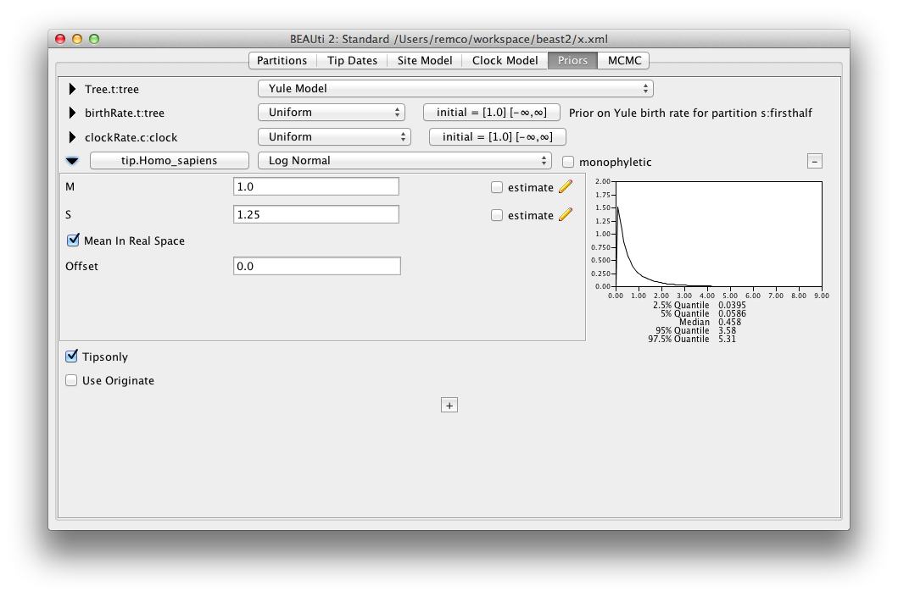

9 June 2015 by Remco Bouckaert
To sample the height of leaf nodes, you need to do the following:
To set up a calibration, the easiest way to do this is by adding a calibration in BEAUti: in the priors panel, hit the little plus (‘+’) button at the bottom of the screen, then specify the leaf you want to sample and give it a unique name. After hitting the OK button, open the details of the prior by pressing the little triangle next to the taxonset (here Homo_sapiens.prior) and a screen shows up like this:

Make sure the Tipsonly box is checked. If you have multiple tips with the same calibration you can put all of these in the same taxonset. With the tipsonly-flag set, the calibration will be applied to the leafs instead of the most recent common ancestor of the set of tips.
You can also use add an MRCAPrior to the XML inside the distribution element with id=”prior” like so:
{% highlight xml %}Make sure taxon id’s are unique: it is possible a taxon with the id of the tip you want to sample is already specified elsewhere in the XML. If so, when starting BEAST, you will get an error saying something like
{% highlight xml %}Error 104 parsing the xml input file IDs should be unique. Duplicate id 'Homo_sapiens' found{% endhighlight %}identifying the id that was already specified.
Also, you want to point to the right tree specified by tree="@Tree.t:tree" in the fragement above.
Once the calibration is set up, for each tip you want to sample add an operator to the XML like so:
{% highlight xml %}and edit it as follows:
To log the leaf height in the trace log, so you can see its mean height, as well as check how well it mixes, add an entry referring to the MRCAPrior to the tracelog. Just place a log entry inside the logger with id=”tracelog” like so:
{% highlight xml %}That’s all.